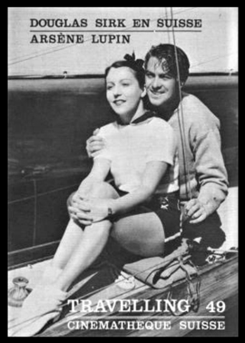
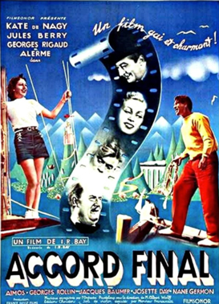
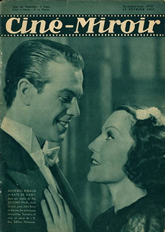

Accord Final
Käthe von Nagy
Georges Rigaud
Raymond Aimos
Jacques Baumer
Michel Vitold
SYNOPSIS
A young American violinist makes a bet with his European promoter that he will marry the tenth girl he meets the next day within 2 months. If he fails, he loses his Stradivarius, if he wins he will get $30,000, but he falls for her roommate. To be near to her, he enrolls under a false name at the local conservatory of music. To get the $30,000 to get his violin back, he agrees to do a concert tour, starting at the local town, but he refuses to let the conservatory's director conduct and wants one of his co-students, but the director won't allow the orchestra to play under another conductor. Now the problem is to get an orchestra within a few days ...
The film was jointly directed by Ignacy Rosenkranz (credited as I.R. Bay) and an uncredited Douglas Sirk.


